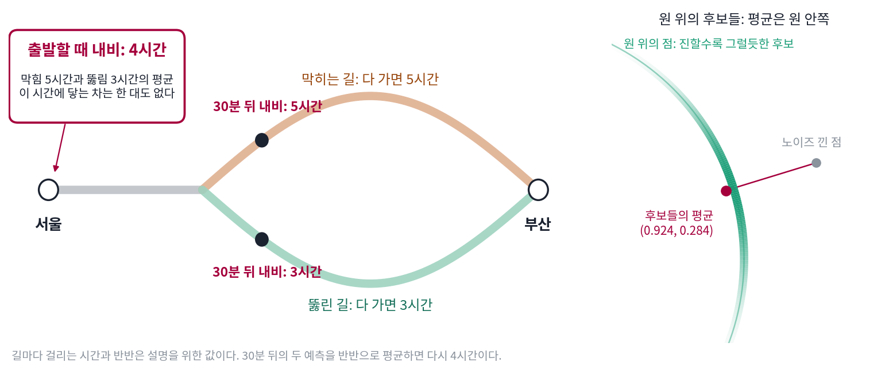

디노이징: 낮은 차원으로 끌어당기기
이 장의 물음
규칙이 있는 자료는 겉보기 칸 수보다 적은 수로 적을 수 있다. 자료가 평평한 면 근처에 모여 있으면 주성분 분석이 그 면의 축을 찾아 주었고, 면 하나로 모자라면 조각마다 다른 축을 고르는 희소 코딩이 있었다. 무엇을 버려도 되는지는 레이트–디스토션과 코딩 레이트가 셈해 주었다. 그런데 이 방법들은 모두 깨끗한 자료를 앞에 두고 축이나 코드를 직접 고르는 일이었다.
요즘 그림을 만드는 디퓨전 모델은 그런 축을 고르지 않고, 학습에서 하는 일도 하나뿐이다. 깨끗한 그림에 노이즈를 섞고, 노이즈 섞인 그림에서 깨끗한 그림을 맞히게 제곱 오차로 가르친다. 휴대폰 카메라의 야간 사진 노이즈 제거도 노이즈 섞인 사진에서 깨끗한 사진을 맞히도록 배운 신경망이다. 이런 디노이저(노이즈 낀 입력에서 노이즈를 걷어 낸 값을 내는 함수)는 「축」이나 「비트」라는 말을 한 번도 듣지 않는다. 그래도 압축과 관계가 있을까?
- 노이즈 낀 입력 하나를 낳을 수 있는 깨끗한 값이 여럿이면, 제곱 오차로 배운 디노이저는 그 가운데 무엇을 내놓을까?
- 디노이저는 입력에 섞인 노이즈를 다 지울 수 없다. 무엇을 지우고 무엇을 남길까?
- 노이즈를 잘 지우는 디노이저가 자료가 사는 낮은 차원을 알고 있다면, 그것을 어떻게 숫자로 확인할 수 있을까?
- 자료가 평평한 면 위에 있으면 디노이저와 주성분 분석은 어떤 관계일까?
- 같은 디노이저를 거듭 쓰면 무엇이 남을까? 노이즈의 세기를 바꿔 가며 쓰면 어떻게 될까?
조건부 평균: 제곱 오차가 고르는 답은 후보들의 한가운데
디노이저를 가르치는 방법은 하나뿐이었다. 깨끗한 그림에 노이즈를 섞고, 노이즈 섞인 그림에서 깨끗한 그림을 맞히게 제곱 오차로 가르친다. 그런데 노이즈 섞인 그림 한 장을 낳을 수 있는 깨끗한 그림은 하나가 아니다. 어두운 데서 찍어 자글자글한 화소 하나는 원래 조금 더 밝은 화소였을 수도, 조금 더 어두운 화소였을 수도 있다. 정답 후보가 여럿인데 답은 하나만 내야 한다면, 제곱 오차로 배운 디노이저는 무엇을 내놓을까? 후보 가운데 가장 그럴듯한 하나일까, 아니면 다른 무엇일까?
후보 둘 사이에서 고르는 답
가장 작은 경우로 재 보자. 깨끗한 값 x₀ 가 +1 아니면 −1 이고 둘이 반반인 자료에, 세기 σ = 0.5 의 가우스 노이즈를 섞어 x = x₀ + σε 를 만든다. 노이즈 낀 값 x = 0.2 를 받았다면 원래 값은 무엇이었을까? +1 에서 0.8만큼 밀렸을 수도, −1 에서 1.2만큼 밀렸을 수도 있다. 두 후보에서 출발해 0.2 가 나올 그럴듯함을 exp(−(x − x₀)² / 2σ²) 로 재면 0.278 과 0.056 이고, 합이 1이 되게 고치면 +1 이 0.832, −1 이 0.168 이다.
답을 하나 c 로 낼 때 제곱 오차의 평균은 0.832(1 − c)² + 0.168(−1 − c)² 이다. 더 그럴듯한 후보 +1 을 답으로 내면 0.672, 0 을 내면 1.000, −1 을 내면 3.328 이다. 가장 작은 값은 c = 0.664 에서 0.559 인데, 0.664 는 두 후보를 그럴듯함으로 무게 매겨 평균한 0.832 × 1 + 0.168 × (−1) 이다(sources/denoising-compression/anchor_figs.py). 제곱 오차가 고른 답은 +1 도 −1 도 아니다.
이렇게 같은 입력 x 를 낳았을 법한 후보들을 그럴듯함으로 무게 매겨 낸 평균을 조건부 평균 (같은 입력을 낳았을 법한 후보들의 평균 / conditional mean) E[x₀ ∣ x] 라 한다. 제곱 오차의 평균을 c 로 미분하면 −2(E[x₀ ∣ x] − c) 이므로, 미분이 0 이 되는 c 가 후보가 둘이든 끝없이 많든 조건부 평균이다. 제곱 오차가 가장 작은 답 E[x₀ ∣ x] 를 이 장은 가장 좋은 디노이저 f(x) 라 부른다.
이 답을 날마다 받는 곳이 있다. 서울에서 부산으로 출발할 때 내비가 말하는 「4시간」은 그날 겪을 수 있는 길들을 평균 낸 값이다. 막히는 길로 들면 5시간, 뚫린 길로 들면 3시간이 걸리고 둘이 반반이라면(설명을 위한 값), 출발할 때 들은 4시간 만에 도착하는 차는 한 대도 없다. 30분을 달려 어느 길로 들어섰는지 정해지면, 내비는 들어선 길에서의 평균인 5시간이나 3시간을 새로 말한다. 조건부 평균의 「조건」은 지금까지 알게 된 것이고, 아는 것이 늘면 후보가 줄어 답이 바뀐다.

원 위의 후보들: 평균은 원 안쪽에 온다
후보가 끝없이 많고 굽은 곳에 놓여 있으면 조건부 평균은 어디에 올까? 계산이 끝까지 되는 가장 간단한 굽은 자료로, 반지름 1인 원 위에 고르게 놓인 점을 쓰자. 원 위의 점 x₀ 에 세기 σ 의 가우스 노이즈를 가로와 세로에 똑같은 크기로 서로 상관없이 섞어 x 를 만든다.
조건부 평균은 원 위의 점을 많이 뽑아 두고 무게를 매긴 평균으로 바로 계산할 수 있다. 원 위의 점 20,000개를 뽑고, 각 점에 「그 점에서 출발해 x 가 나올 그럴듯함」 exp(−|x − x₀|² / 2σ²) 을 무게로 매겨 평균을 낸다. σ = 0.3 이고 노이즈 낀 점이 (1.3, 0.4) 라면 평균은 (0.924, 0.284)다. 원은 모든 방향으로 똑같이 생겼으므로 이 평균을 식(베셀 함수의 비)으로도 적을 수 있는데, 식이 낸 값도 (0.924, 0.284)다. 노이즈 낀 점 2,000개에서 두 계산의 차이는 가장 커도 0.0074였다(sources/denoising-compression/s1_arrows.py).
도착한 곳의 반지름은 0.966으로 원보다 조금 안쪽이다. (1.3, 0.4)를 낳았을 법한 원래 점들이 원호를 따라 조금 퍼져 있고, 원호 위 점들의 평균은 원호의 안쪽에 오기 때문이다. 가장 좋은 디노이저는 원 위의 어느 한 점을 고르지 않고 후보들의 한가운데를 골랐다.
ML에서: 제곱 오차로 배운 신경망은 평균을 낸다
디퓨전 모델의 디노이저도, 휴대폰 카메라의 노이즈 제거 신경망도 제곱 오차로 배운다. 손실을 끝까지 줄인 신경망이 내놓는 것은 그 입력을 낳았을 법한 깨끗한 그림들의 조건부 평균이다. 노이즈가 작으면 후보가 거의 하나로 좁혀져 평균이 곧 그 그림이지만, 노이즈가 크면 후보 그림이 많아져 평균이 흐려진다. 라벨을 넣고 그림을 받도록 제곱 오차로 배운 신경망이 어느 사람의 글씨도 아닌 흐린 평균 숫자를 그리는 것도 제곱 오차가 평균을 고르기 때문이다.
개념 다지기: 어느 후보도 아닌 답은 틀린 답일까

내비가 출발할 때 말한 4시간 만에 도착하는 차는 한 대도 없었어요. 그럼 4시간은 틀린 예측일까요?

틀린 것 같아요. 실제로 걸리는 건 3시간 아니면 5시간인데요. 둘 중 하나를 말하면 반은 딱 맞히잖아요.
딱 맞힌 날 수로 점수를 매기면 그렇겠죠. 디노이저를 가르칠 때는 무엇으로 점수를 매겼죠?

제곱 오차요. 크게 틀린 날이 무겁게 들어가니까, 한쪽을 찍었다가 반대쪽이 걸리면 크게 깎이겠네요. 그래서 가운데를 고르는 거고요.

아, 점수를 매기는 방법이 답을 정하는 거네요. 4시간은 틀린 게 아니라 제곱 오차라는 점수에 가장 잘 맞춘 답이었어요.

그럼 디노이저가 노이즈가 많이 낀 그림을 받으면 무엇을 내놓을까요?

그 그림을 낳았을 법한 깨끗한 그림이 많을 테니까 그 평균이요. 실제로 있는 그림 하나가 아니라 흐린 그림일 거예요.

그럼 흐린 평균은 쓸모가 없나요? 원에서도 평균이 원 안쪽으로 들어가서 원 위의 점이 아니었잖아요.

그래도 노이즈 낀 점에서 원 쪽으로 곧게 다가갔어. 후보들이 어디에 몰려 있는지는 평균이 알려 주는 거야. 그리고 내비처럼 아는 게 늘면 후보가 줄어서, 답이 실제 값 쪽으로 옮겨 가고.

그래요. 이 장의 디노이저는 모두 이 조건부 평균이에요. 무엇을 지우고 무엇을 남기는지, 거듭 쓰면 어디로 가는지도 「후보들의 한가운데」를 따라가면 보여요.
문제 1. 고향 가는 길의 도착 시간
주말에 고향 가는 길은 지난 기록으로 보면, 고속도로가 뚫려 3시간 걸린 날이 절반, 고속도로가 막혀 4시간 걸린 날이 30%, 사고로 국도로 돌아가 6시간 걸린 날이 20%였다. (가) 출발할 때 걸릴 시간을 숫자 하나로 말하고, 실제 시간과의 차를 제곱한 값의 평균으로 평가받는다면 몇 시간이라고 말해야 하는가? 그만큼 걸린 날은 며칠인가? (나) 가장 흔한 3시간으로 말하면 평가 점수는 얼마나 나빠지는가? (다) 출발 30분 뒤 고속도로를 타고 있다는 것을 알게 되면, 출발부터 도착까지 걸릴 시간을 몇 시간이라고 고쳐 말해야 하는가?
절반은 3시간이니까 3시간이라고 말하는 게 가장 많이 맞히겠죠.
맞힌 날 수가 아니라 제곱 오차로 평가받아요. 3시간이라고 했는데 6시간 걸린 날은 얼마나 깎이죠?

3² = 9요. 20%의 날에 9씩이니까… 평균은 0.3 × 1 + 0.2 × 9 = 2.1이에요. 6시간 걸린 날이 크게 깎이네요. 제곱 오차면 평균 쪽이 나을 테니까 0.5 × 3 + 0.3 × 4 + 0.2 × 6 = 3.9시간이요.
3.9시간이면 0.5 × 0.81 + 0.3 × 0.01 + 0.2 × 4.41 = 1.29야. 3시간의 2.1보다 0.81 작아. 그런데 3.9시간, 그러니까 3시간 54분 걸린 날은 하루도 없어.
(나)의 차이 0.81은 어디서 나온 수일까요?
(3.9 − 3)² = 0.81이네요. 평균에서 벗어난 만큼의 제곱이 점수에 그대로 더 붙는 거예요.
(다)는요?
고속도로를 타고 있으면 6시간인 경우는 빠지니까, 3시간과 4시간이 0.5 : 0.3, 곧 5 : 3이에요. (5 × 3 + 3 × 4) ÷ 8 = 3.375시간이요.

고속도로면 3.375시간, 국도면 6시간이고, 30분 뒤에 어느 쪽일지는 0.8 : 0.2였으니까 둘을 평균하면 0.8 × 3.375 + 0.2 × 6 = 3.9시간이야. 처음 말한 3.9시간이 다시 나와. 처음 답이 틀려서 고친 게 아니라, 아는 게 늘어서 고친 거네.
문제 2. 흑백 칸 하나를 디노이저로 고치면
흑백 그림의 칸 하나는 깨끗할 때 0(검은색) 아니면 1(흰색)이고, 둘은 반반이다. 여기에 세기 σ 의 가우스 노이즈를 섞은 값 x 를 받아, 제곱 오차가 가장 작은 디노이저로 고친다. (가) σ = 0.2 일 때 x = 0.5, 0.6 의 출력은 얼마인가? (나) σ = 1 일 때 x = 0.6, 1.4 의 출력은? (다) σ = 1 로 제곱 오차를 써서 학습한 신경망의 출력에 회색 칸이 많아 흐릿하다. 학습을 더 오래 하면 0이나 1로 또렷해질까?
무게로 해 볼게요. (가)에서 x = 0.6이면 흰색에서 0.4, 검은색에서 0.6 떨어졌으니까 무게가 e^(−0.16/0.08) = 0.135, e^(−0.36/0.08) = 0.011이에요. 흰색일 확률이 0.135 ÷ 0.146 = 0.924라서 출력도 0.924요. x = 0.5면 두 후보에서 똑같이 떨어져 있으니까 0.5고요.
(나)에서 노이즈를 1로 키우면요?
x = 0.6에서 0.525, x = 1.4에서 0.711이에요. 1.4면 흰색보다도 밝은데 0.711밖에 안 되네요.
노이즈가 1이면 검은색 칸에서 1.4가 나오는 일도 꽤 있으니까. 두 후보가 다 살아 있어서 가운데 쪽으로 당겨지는 거야.
(다)는요? 신경망의 출력이 흐린 건 덜 배워서일까요?
덜 배워서라면 오래 학습할수록 0과 1로 갈라지겠지만… 방금 계산한 가장 좋은 디노이저도 0.525, 0.711을 냈어요. 끝까지 배워도 0.525, 0.711이니까 흐린 게 정답이에요.

20만 칸으로 돌려 보니 σ = 1에서 가장 좋은 디노이저의 출력 가운데 78.3%가 0.2~0.8 사이 회색이에요. 제곱 오차는 0.199인데, 0.5에서 잘라 0이나 1로 또렷하게 내면 0.308로 오히려 커지고요.

또렷한 그림을 원하면 점수를 바꾸든가, 노이즈를 조금씩 걷어 가며 여러 번 고쳐야겠네요. 제곱 오차로 한 번에 고치면 흐린 게 가장 좋은 답이니까요.